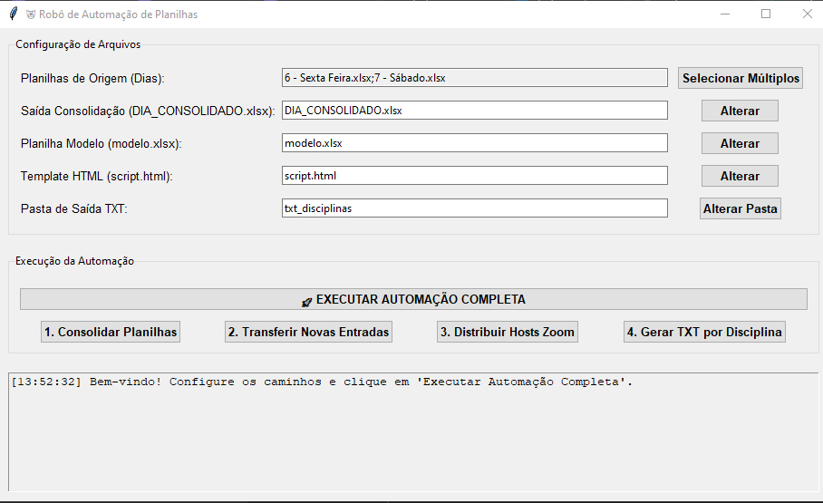
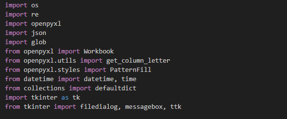
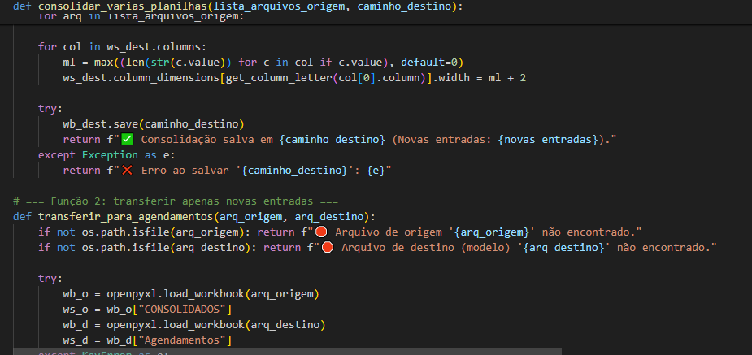

IMPLEMENTAÇÃO E INSIGHTS

Interface do Usuário: Design funcional em Tkinter para uma operação intuitiva.

Bibliotecas Utilizadas: A base do projeto, com OpenPyXL para Excel e Tkinter para a GUI.

Visualização do Código: Trecho da lógica principal de consolidação de dados.

Txt Final: Script final, ja preenchido com as datas pronto para uso.